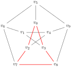
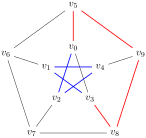

Section 6.1 Graph basics
Definition 6.1.1. Graph.
A graph is an ordered pair \(\Gamma=(V,E)\text{,}\) where \(V\) is a set of vertices and \(E\) is a set of edges, where edges are unordered pairs of distinct vertices. That is,
\begin{equation*}
E \subseteq \set{\set{u,v}:u,v\in V}.
\end{equation*}
In order to simplify notation, we will write \(uv\) instead of \(\set{u,v}\) for an edge.
Example 6.1.3. The Petersen graph.
A famous example of a graph is the Petersen graph, \(\Pi\text{.}\) Here it is drawn with its vertex set consisting of the collection of subsets of size 2 of the set \(\set{0,1,2,3,4}\text{,}\) with an edge between vertices if and only if they are disjoint as sets. This labeling of the Petersen graph is convenient for several application in algebraic graph theory.
Definition 6.1.4. Adjacent and incident.
Two vertices \(v_0,v_1\in V(\Gamma)\) are adjacent if and only if \(v_0v_1\in E(\Gamma)\text{.}\) An edge \(e\in E(\Gamma)\) is incident with a vertex \(v_0\in V(\Gamma)\) if and only if there is another vertex \(v_1\in V(\Gamma)\) such that \(v_0v_1 = e\text{.}\)
Definition 6.1.5. Vertex degree.
The degree of a vertex \(v\in V(\Gamma)\) is the number of vertices adjacent to \(v\text{;}\) that is,
\begin{equation*}
d(v) = \abs{\set{u\in V:uv\in E}}\text{.}
\end{equation*}
Another term for the vertex degree is valence, as borrowed from chemistry, and historically some authors have preferred \(\rho(v)\) to denote valence.
Definition 6.1.6. Subgraphs.
A graph \(\Gamma'=(V', E')\) is a subgraph of \(\Gamma=(V,E)\) if and only if \(V'\subseteq V\) and \(E'\subseteq E\text{.}\) The subgraph \(\Gamma'\) is the subgraph of \(\Gamma\) induced by \(V'\) if and only if \(E' = \set{uv\in E: u,v\in V'}\text{.}\) That is, \(\Gamma'\) is an induced subgraph of \(\Gamma\) if and only if every edge of \(\Gamma\) between vertices of \(\Gamma'\) is an edge of \(\Gamma'\text{.}\) There are many competing notations for induced subgraphs, but we will denote the induced subgraph of \(V'\) in \(\Gamma\) by \(\Gamma[V']\text{.}\)
Example 6.1.7. Some subgraphs of the Petersen graph.
If we relabel the vertices of the Petersen graph \(\Pi\) as
\begin{align*}
v_0 \amp = \set{0,1}, \amp
v_1 \amp = \set{1,2}, \amp
v_2 \amp = \set{2,3}, \amp
v_3 \amp = \set{3,4}, \amp
v_4 \amp = \set{0,4},\\
v_5 \amp = \set{2,4}, \amp
v_6 \amp = \set{0,3}, \amp
v_7 \amp = \set{1,4}, \amp
v_8 \amp = \set{0,2}, \amp
v_9 \amp = \set{1,3},
\end{align*}
then the subgraph \(\Pi[V']\) induced by \(V'=\set{v_0,v_2,v_3,v_7,v_8}\) has edge set \(E' = \set{v_0v_2, v_0v_3, v_2v_7, v_3v_8, v_7v_8}\text{,}\) highlighted in red.

Definition 6.1.8. Graph isomorphism.
Two graphs \(\Gamma=(V,E)\) and \(\Gamma'=(V',E')\) are isomorphic if there is a function \(\phi:V\to V'\) such that the following three conditions hold.
- Injective
If \(v_0,v_1\in V\) with \(v_0\neq v_1\text{,}\) then \(\phi(v_0)\neq\phi(v_1)\text{.}\)
- Surjective
If \(v'\in V'\text{,}\) then there is some \(v\in V\) such that \(\phi(v)=v'\text{.}\)
- Graph Homomorphism
\(v_0v_1\in E\) if and only if \(v_0'v_1'\in E'\) with \(\phi(v_0)=v_0'\) and \(\phi(v_1)=v_1'\text{.}\)
If such a function exists, we write \(\Gamma\cong \Gamma'\text{.}\)
Each of these conditions independently are important, but their combination is essential in graph theory: a graph isomorphism is an adjacency-preserving bijection between vertex sets.
Definition 6.1.9. Graph automorphism.
Let
\(\Gamma=(V,E)\text{.}\) A permutation
\(\phi:V\to V\) which satisfies condition (3) of the definition of
Graph isomorphism is a
graph automorphism. The set of all automorphisms of a graph
\(\Gamma\) is denoted
\(\Aut\Gamma\text{.}\)
Example 6.1.10. Isomorphism is not equality.
Consider the graphs
\begin{equation*}
K_4 = (\set{a,b,c,d}, \set{uv:u,v\in V, u\neq v})
\end{equation*}
and
\begin{equation*}
K_4' = (\set{v_0,v_1,v_2,v_3},\set{v_iv_j: i,j\in\set{0,1,2,3}, i\lt j})\text{.}
\end{equation*}
Since \(V(K_4)\neq V(K_4')\text{,}\) obviously \(K_4\neq K_4'\text{.}\) However choosing any bijection \(\phi:\set{a,b,c,d}\to\set{v_0,v_1,v_2,v_3}\) suffices to produce a graph isomorphism from \(K_4\) to \(K_4'\text{,}\) so \(K_4\cong K_4'\)
Definition 6.1.11. Paths.
Suppose \(\Gamma=(V,E)\) is a graph and \(u,v\in V\text{.}\) A path between \(u\) and \(v\) is any sequence
\begin{equation*}
(u=v_0, e_1, v_0, e_2, v_1, \ldots, v_{n-1}, e_n, v_n = v)
\end{equation*}
such that \(e_i = v_{i-1}v_i\) for each \(i\in\set{1,2,\ldots,n}\) and \(v_i\neq v_j\) if \(i\neq j\text{.}\) This can also be called a \(u,v\)-path. A path containing \(n\) edges is a path of length \(n\text{.}\)
Definition 6.1.12. Graph distance.
Let \(\Gamma=(V,E)\) be a graph and \(v_0, v_1\in V\text{.}\) The distance from \(v_0\) to \(v_1\) is the length of a shortest path between \(v_0\) and \(v_1\text{.}\) If no such path exists, the distance from \(v_0\) to \(v_1\) is \(\infty\text{.}\) Distance between \(v_0\) and \(v_1\) in the graph \(\Gamma\) is sometimes denoted \(d_\Gamma(v_0,v_1)\text{,}\) which can be easily confused with the notation for degree.
Definition 6.1.13. Cycles in graphs.
A cycle is a sequence
\begin{equation*}
(v_0,e_1,v_0, e_2, v_1, \ldots, v_{n-1}, e_n, v_n = v_0)
\end{equation*}
such that \(e_i = v_{i-1}v_i\) for each \(i\in\set{1,2,\ldots,n}\) and \(v_i\neq v_j\) if \(i\neq j\) except for \(v_0=v_n\text{.}\) A cycle containing \(n\) edges is an \(n\)-cycle, and is isomorphic to the cycle graph \(C_n=(\mathbb{Z}_n, \set{ab:a,b\in\mathbb{Z}_n, a-b\equiv 1\mod(n)}\text{.}\)
Example 6.1.14. Paths and a cycle in the Petersen graph.
It is easy to draw the Petersen graph with two distinct (and openly disjoint) \(v_0,v_3\)-paths, one highlighted in red and the other in blue. The union of the red and blue paths is a 9-cycle in \(\Pi\text{.}\)

Definition 6.1.15. Connected graphs.
The graph \(\Gamma\) is connected if and only if for any two distinct vertices \(v_0,v_1\in V\) there is at least one \(v_0,v_1\)-path.
Definition 6.1.16. Components of a graph.
A subgraph \(\Gamma'=(V',E')\) of a graph \(\Gamma=(V,E)\) is a component of \(\Gamma\) if and only if \(\Gamma'=\Gamma[V']\) and \(\Gamma[V'\cup\set{v}\) is disconnected for any vertex \(v\in V\setminus V'\text{.}\) Clearly, a connected graph has only one component.
Definition 6.1.17. Trees and forests.
A connected graph containing no cycles is called a tree. An arbitrary graph containing no cycles is called a forest. For a given graph \(\Gamma=(V,E)\text{,}\) a forest \(\Phi=(V,E')\) where \(E'\subseteq E\) is called a spanning forest. A spanning tree of a connected graph is defined analogously.
These are just a few of the basic definitions of graph theory. It is a subject which is very appealing for research as the problems are often visually interesting. Since problems in the field are very accessible, some mathematicians are mildly derogatory towards graph theory, calling the field “recreational mathematics.” If that is so, then the vast number of graph theorists are perhaps the luckiest of all mathematicians: their chosen field of research is seen to be fun and games by their colleagues!
All joking aside, graph theory and the larger discipline of combinatorics are deeply applicable fields. There are many pratical, real world problems which are modeled by discrete systems (rather than continuous systems, such as used in differential equations or traditional applied math courses), and graph theory techniques are often the best solution to these problems. So while combinatorics is not generally considered part of applied mathematics, it is very much applicable mathematics.